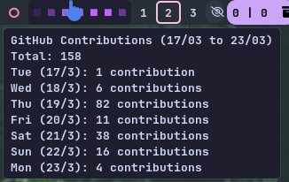

About
A terminal or bar integration script that fetches your GitHub contribution activity for the last 7 rolling days using the GitHub GraphQL API and renders a custom purple colored heatmap (■) with detailed tooltips. Designed for seamless integration with status bars like Waybar, Polybar, or any custom desktop widget.

✨ Key Features
- Real-Time Data: Pulls contribution data directly from GitHub's GraphQL API.
- Rolling 7-Day Window: Always shows the past 7 days accurately, never resetting awkwardly at the start of a week.
- Custom Purple Theme: Uses a beautiful color-coded square (■) gradient system.
- Detailed Tooltips: Hover to see a date-wise contribution breakdown and total contributions over the tracked period.
🟪 Color Levels (Purple Theme)
The heatmap utilizes the following color logic based on daily commit count:
| Contributions | Color Hex | Meaning |
|---|---|---|
| 0 | #161b22 | No contributions |
| 1–3 | #3d2258 | Low activity |
| 4–6 | #6a3896 | Moderate activity |
| 7–9 | #974ddb | High activity |
| 10+ | #c463ff | Very high activity |
🛠️ Setup & Installation
1. Clone the Repository
git clone https://github.com/ahmed-x86/waybar-github-rolling-contributions.git
cd waybar-github-rolling-contributions2. GitHub Authentication
To make this module work, you need your GitHub username and a Fine-Grained Personal Access Token (PAT).
- Scope needed:
Repository access → All repositories - Minimum required permissions for reading contribution data.
3. Create .env File
Inside the cloned project directory, create a .env file with the following content:
GITHUB_USERNAME=your_github_username
GITHUB_PAT=ghp_yourGeneratedTokenHere🖥️ Waybar Configuration
Add the following block to your Waybar config.jsonc. (Make sure to update the path to where you placed the script and change the github URL to your own):
"custom/gh_heatmap": {
"exec": "sleep 1 & ~/.config/waybar/scripts/weekly_commits",
"return-type": "json",
"interval": 2400,
"tooltip": true,
"on-click": "xdg-open https://github.com/ahmed-x86",
"on-click-right": "~/.config/waybar/scripts/weekly_commits"
}chmod +x ~/.config/waybar/scripts/weekly_commits
🎨 Styling (CSS)
Add the following styling to your Waybar style.css. It fits perfectly with dark/Catppuccin backgrounds:
#custom-gh_heatmap {
color: #c463ff;
background: rgba(30, 30, 46, 0.89);
border-radius: 6px;
margin-right: 2px;
padding: 0px 8px;
}